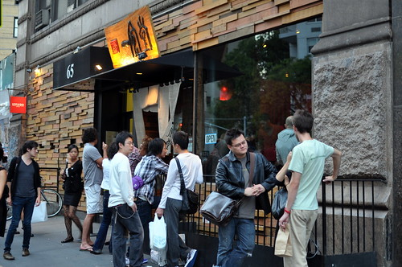

Japanese

Ippudo
Ippudo serves deep, rich ramen in a fun, high-energy space. The pork buns are soft and perfect, and the ramen is one of the best in the city.

Sushi Nakazawa ★
Sushi Nakazawa is calm and focused, with each piece of sushi served one by one. It's simple, beautiful, and all about the details.